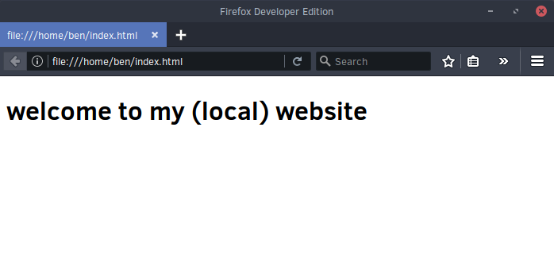

Not going to teach HTML/CSS
Local HTML Files
- File stored on your computer
- Other people can't access it

Web Servers
file:// - read from the diskhttp:// - speak HTTP to a server- web server - program which speaks HTTP
- nginx
- apache
Hosting on your Computer
- You can run a web server on your computer
- Public access: static IP & port forwarding
- Always on
Static hosting
- Just upload files
- No maintenance
- GitHub Pages, Amazon S3, Dropbox
- No dynamic sites
Hosted Services
- No maintence
- wordpress.org
Shared Hosting
- Some maintenance
- Upload files via FTP
- Create databases
- Usually PHP
- GoDaddy, HostGator
PaaS
- Heroku
- pythonanywhere.com
- You write code, don't worry about infrastructure
IaaS
- VPS (shared) or dedicated server
- You have to do maintenance
- You have to install a web server, database, etc...
- Full control
- Amazon EC2, DigitalOcean, Linode, ...
IP Address
- You can access any server via its IP address
- http://155.246.21.100 shows stevens.edu
- Not user friendly
Domain Name
- google.com, stevens.edu
- TLDs: .com, .net
- New TLDs such as .ninja, .wtf

DNS
- Translate domain names to IP addresses
- purple.com → 153.104.63.227
- We need to get our domain into the DNS system
Domain Registrars
- Buy domains
- Takes up to 24 hours to propogate
- NameCheap, GoDaddy